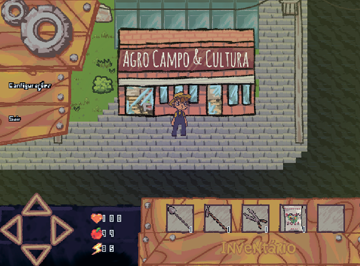
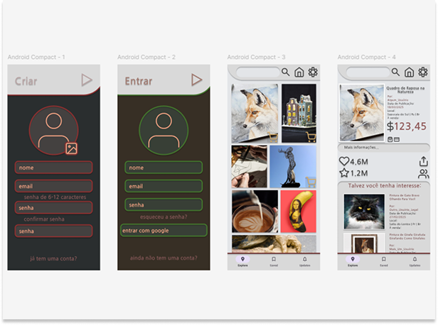
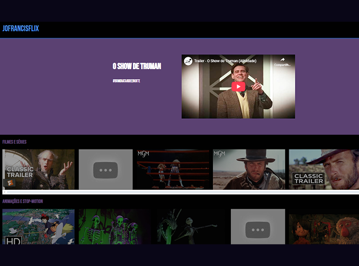

Meus projetos

GameDev: programação visual Scratch e escrita GDScript
Jogos autorais feitos no Scratch e no Godot (GDScript). Projetos (em Scratch) premiados, com sistemas complexos, trilha sonora original e visuais únicos.

Design e UI/UX: interface de aplicação mobile e currículo
Design criado no Figma com botões funcionais. Também tenho experiência com Canva e outros. Organização visual, navegação fluida e foco artístico.

Web: programação de sites em HTML, CSS e JS
Projetos feitos do zero após cursos completos da Alura. Inclui sites com conteúdo multimídia, lógica de navegação interativa e estrutura responsiva.